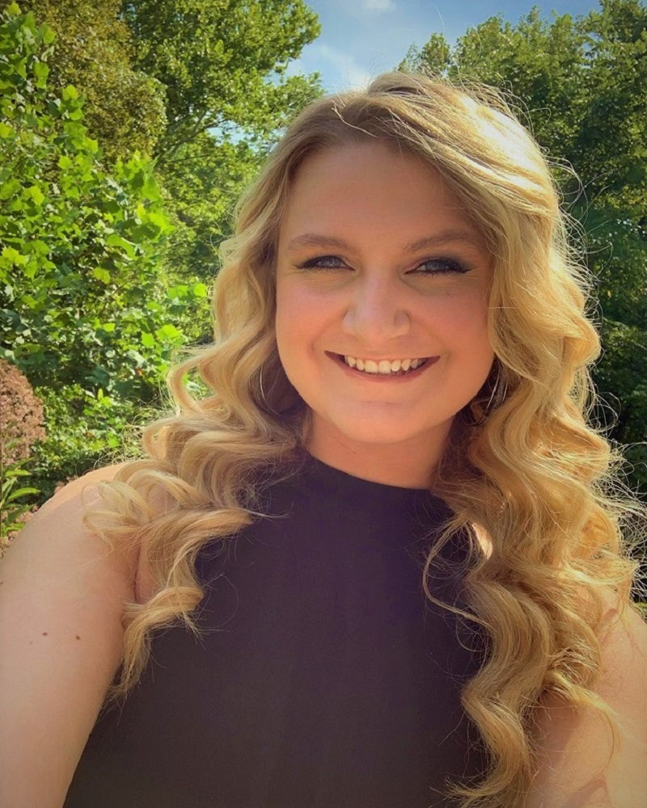
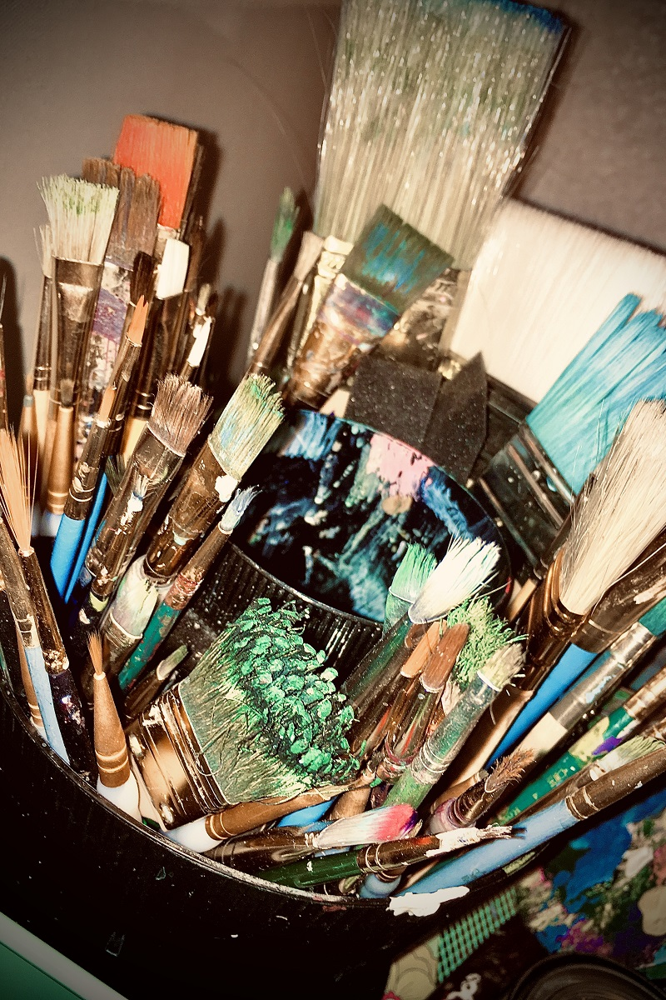

Meet the Artist
Hi everyone! My name is Sara Jenkins and I am the artist behind SaraPaints! I am 20 years old and am from Southern Ohio. I graduated from Rock Hill High School in 2018 and am currently studying Web Development at Fort Hays State University. I love just about every type of art! Painting is one of my favorite hobbies, but I also love woodburning, playing guitar, singing, and drawing. I'm a sucker for the country, I couldn't even imagine living in a big city. There's nothing more peaceful than sitting outside on my front deck, looking out over the wooded valley and creek, listening to the birds, and working on my latest art project. I'm super excited to see what everyone has up their sleeves to challenge my art skills with!
What is SaraPaints?
SaraPaints is a website I created with the purpose of creating custom pieces of artwork for you! You submit a description or an image, pick the medium, choose the canvas size, and add any additional requests. Then, I take it from there and create your one-of-a-kind masterpiece!
